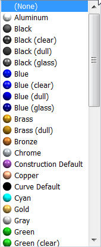

Apply an override to the base part style with Part Painter
-
Choose View tab→Style group→Part Painter
 .
. -
On the Part Painter command bar, do the following:
-
From the Select Element Type list, click the type of element to which you want to apply the override.
-
Any
-
Face
-
Feature
-
By Feature Type (in the ordered environment)
-
Body
For examples, see the Part Painter command bar.
-
-
From the Currently Applied Styles list, select one of the following:
-
To remove all previously applied colors, click Replace styles.
Example:Use the Replace styles option to remove residual colors from an imported Parasolid body.
-
If there are some colored elements that you want to keep while you apply new colors to others, click Keep styles.
-
-
From the Face Styles List, select the face style you want to apply.

Example:You can select None from the Face Styles List, as well as Replace Styles from the Currently Applied Styles list, to remove any styles that are currently applied to the elements you select.
-
-
In the graphics window or in PathFinder, click the elements that you want to paint. You also can drag a box around elements to select them.
The selected geometry changes to the face style color you selected. If you selected None, then the geometry changes to the color assigned to Model Default in the Style dialog box. Surfaces are restored to the face style color named Construction Default.
-
You can continue to use the command until the part is painted the way you want it to be.
You can use the Style Organizer dialog box to copy face style definitions from one file to another. To access the Style Organizer dialog box, choose the View tab→Styles command. In the Style dialog box, set the Select type box to Face Styles, and then click the Style Organizer button.
How do I
Set the Color Scheme for Solid EdgeSet the part color display
Display Element Colors Based on Degrees of Freedom
Display draft face colors on a part
Learn more
Using colors in Solid EdgeUsing Color Manager and Part Painter
Using 3D model colors in drawing views
Look up more details
Color Manager commandColor Manager dialog box
Part Painter command
Part Painter command bar
Relationship Colors command
Color dialog box